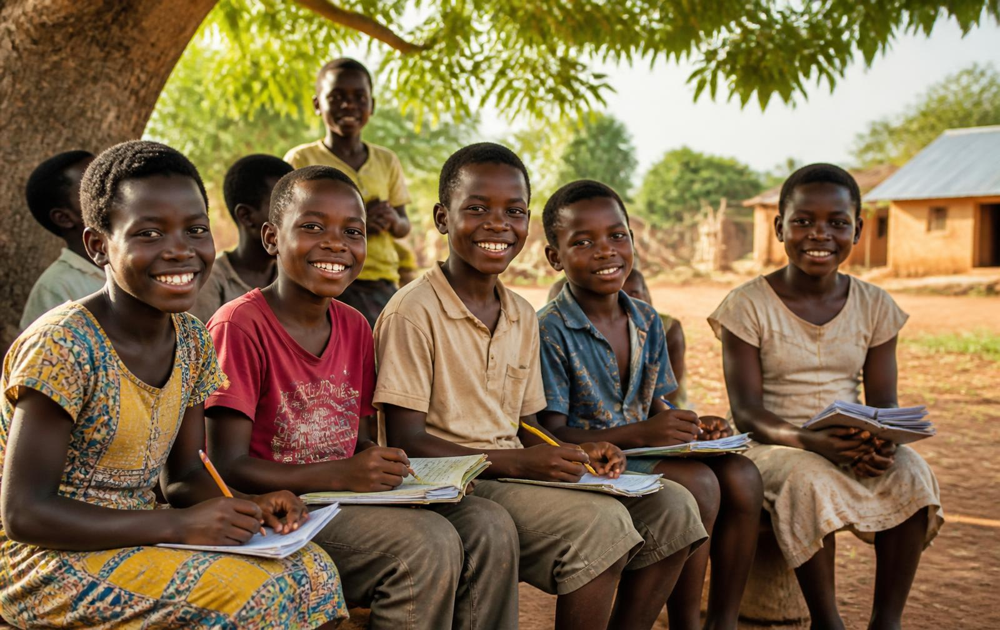
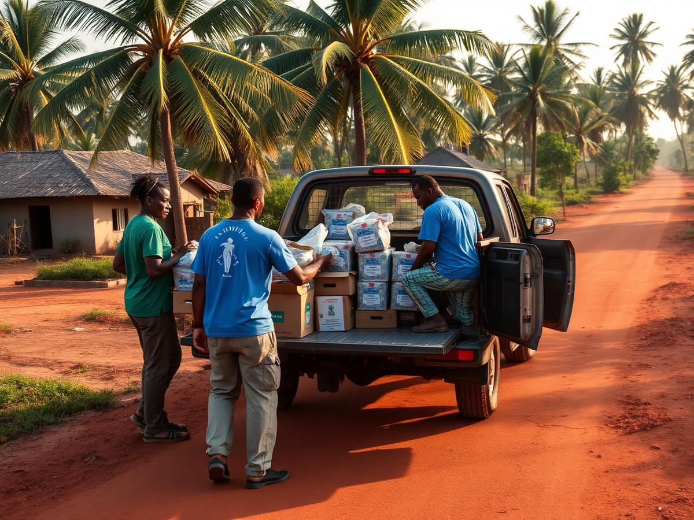

Central Region · Ghana
The children the map forgot still deserve a full childhood.
Nsaboa Foundation works in the remote villages of the Central Region, giving children under 16 school supplies, free medical check-ups and scholarships.
1,200+
Children reached with supplies
18
Remote villages served
100%
Of gifts spent in the field
Why we exist
Most non-profits stop at Accra, Ashanti and Eastern. We start where they stop.
Funding, volunteers and media attention cluster around a handful of regions. Meanwhile fishing hamlets and farming settlements across the Central Region raise children who have never owned a school bag or seen a nurse. We were founded to close that gap, one village at a time.
Read our story →
Three promises we keep
School supplies
Exercise books, pens, bags, uniforms and sandals delivered directly to village schools each term.
Medical check-ups
Free screening clinics with volunteer nurses: growth, vision, malaria, deworming and referrals.
Scholarship aid
We identify the brightest children and secure funding so their family’s income never ends their schooling.
Global framework
Our work maps directly to the UN SDGs and WHO child health standards
No Poverty
Direct relief to households living below the line.
Good Health & Well-being
WHO-aligned child screening, deworming and referrals.
Quality Education
Supplies and scholarships so no bright child drops out.
Reduced Inequalities
Serving villages left out of the Accra-Ashanti-Eastern focus.
We follow WHO guidance on integrated management of childhood illness, growth monitoring and immunisation follow-up during every village check-up, and we report our reach against the SDG indicators for under-16 school participation.
Christmas Eve 2026: goodies for a seaside town with nothing to celebrate
On 24 December 2026 we take food, gifts and a health post to impoverished children of a selected coastal community in the Central Region.